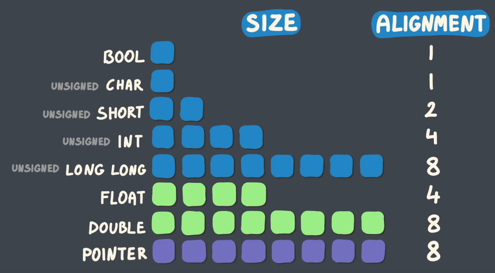

Alignment
-
Alignment and Size are different things.
-
Alignment == "Divisible by".
-
Required byte boundary a value must start on, typically a power of two.
-
Hardware or ABI rule ensuring each type begins at addresses divisible by its alignment requirement.
-
 .
-
An address is said to be aligned to
Nbytes , if the addresses's numeric value is divisible byN. The numberNin this case can be referred to as the alignment boundary . Typically an alignment is a power of two integer value. -
A natural alignment of an object is typically equal to its size. For example a 16 bit integer has a natural alignment of 2 bytes.
Unalignment
-
When an object is not located on its natural alignment boundary, accesses to that object are considered unaligned .
-
Some machines issue a hardware exception , or experience slowdowns when a memory access operation occurs from an unaligned address. Examples of such operations are:
-
SIMD instructions on x86. These instructions require all memory accesses to be on an address that is aligned to 16 bytes.
-
On ARM unaligned loads have an extra cycle penalty.
-
-
If you have an unaligned memory access (on a processor that allows it), the processor will have to read multiple “words”. This means that an unaligned memory access may be much slower than an aligned memory access.
-
This can also lead to undefined behavior if the unaligned memory is within cache bounds.
Implicit Alignment
-
When placing a field, the compiler ensures the field's offset is a multiple of the field's alignment. If the current offset is not a multiple of the field's alignment, the compiler inserts padding before the field so the resulting offset becomes a multiple of the alignment.
-
When placing field F the compiler ensures
offset(F) % align(F) == 0. -
If not, it inserts
padding = (align(F) - (offset % align(F))) % align(F)bytes before F. -
The struct’s overall alignment is
max(align(member)). The compiler may add trailing padding sosizeof(struct)is a multiple of that max alignment.
-
-
A struct adds implicit padding between members, based on the alignment of the member with the highest alignment.
-
The gray dots indicate the implicit padding added by the compiler.
-
 .
.
-
It may also add padding at the end of the struct, so the struct is divisible by its alignment. This ensures that when the struct is used as an array, each struct will be properly aligned along with its members.
Odin
-
Alignment, Size and the Pointer are related, such as:
-
size_of(T) % align_of(T) == 0. -
uintptr(&t) % align_of(t) == 0. -
Check Odin#Alignment .
-
-
Many operations that allocate memory in this package allow to explicitly specify the alignment of allocated pointers/slices.
-
The default alignment for all operations is specified in a constant
mem.DEFAULT_ALIGNMENT.
std140 and std430
-
Both are GLSL memory alignments.